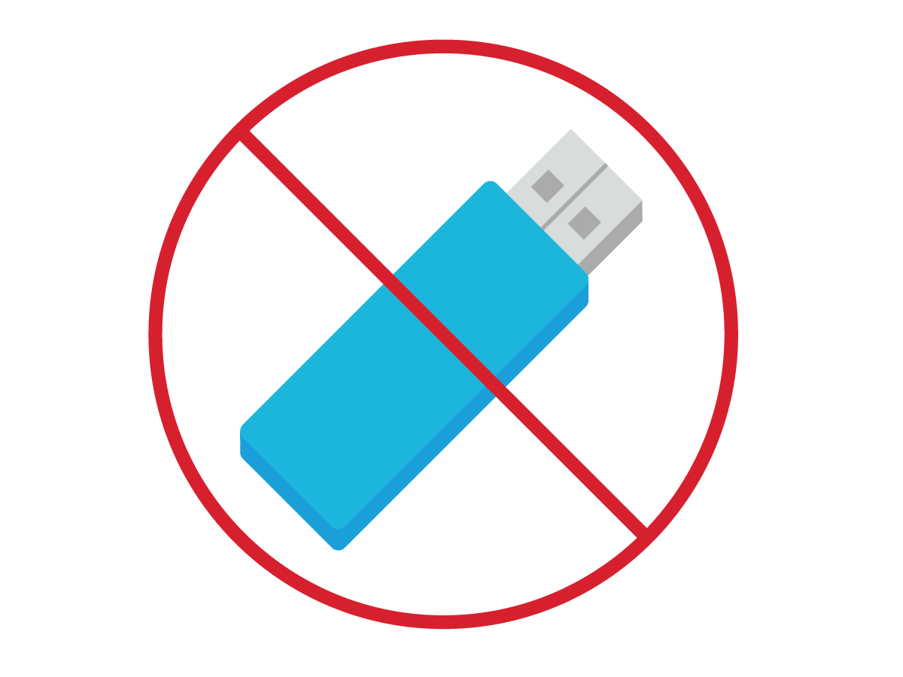
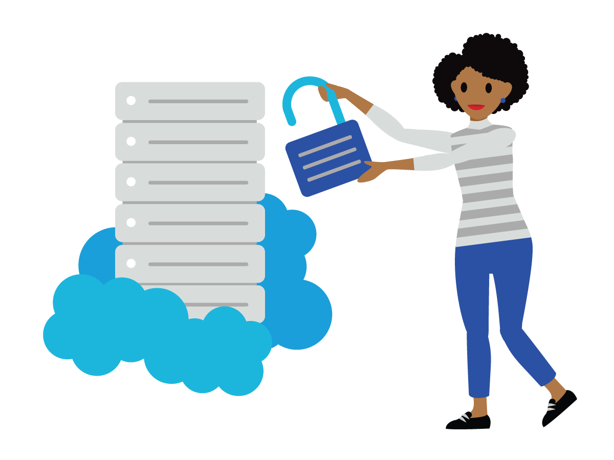
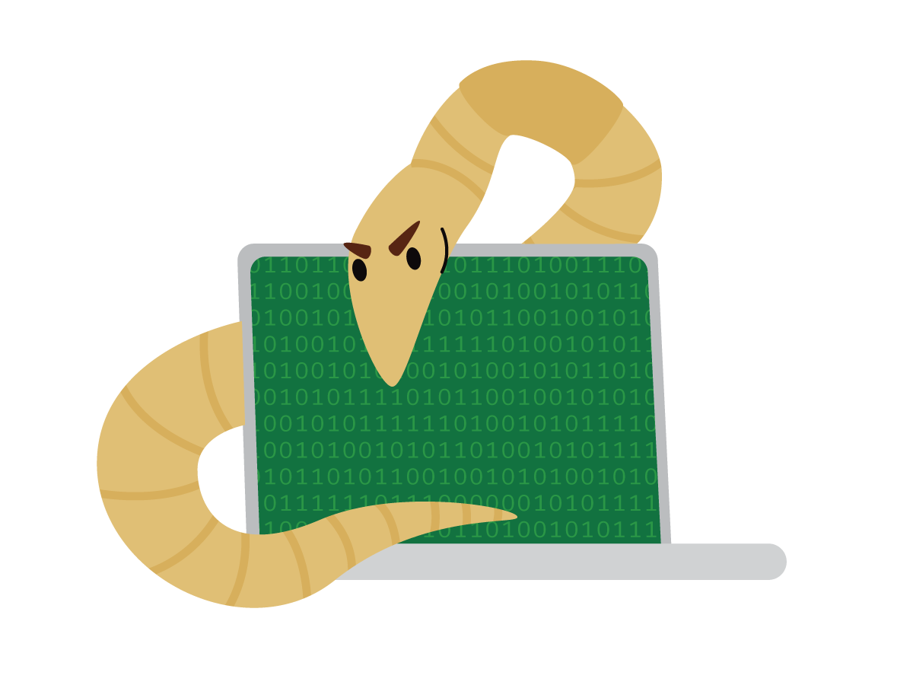

After completing this unit, you’ll be able to:
Salesforce has implemented strong, multitiered, multifactor authentication to access production environments. The Information Security Standards contains further information on requirements around production access controls and administrative access. If you’re an admin with elevated access rights or other similar accounts used to perform privileged actions, remember not to use these accounts to log in to workstations or to perform nonprivileged actions. If your workstation is compromised and a hacker gains entry to your machine, an attacker can collect your credentials and start using them to wreak havoc on our systems and networks.
We take production access seriously at Salesforce, especially in Salesforce Government Cloud. If you need access to production environments or if you have questions about access controls, you can always contact the System Security team at gia-admins@salesforce.com for the Salesforce Government Cloud or to security@mulesoft.com for MuleSoft Government Cloud.
We have a Network Protection Standard that applies to all Salesforce employees, interns, vendors, contingent staff, partners, and any other individuals who maintain access to Salesforce systems. This standard covers requirements to secure Salesforce networks from unauthorized access, denial-of-service attacks, and other threats that impact the confidentiality, integrity, and availability of network services, systems, data, and applications.
Data Backup and Storage
Per the company’s Information Security Standards, Salesforce business and customer information must be backed up at a frequency consistent with recovery time and recovery point objectives. Backup information and media must be protected at all storage locations and be sanitized, or destroyed, or both when no longer required. For additional information, review the Backup and Restore Standard.
Media Protection
A limited number of Salesforce employees have access to media that contains customer data. These employees are the data center engineers located in Salesforce’s production colocation data centers. Salesforce has developed a Device and Media Handling Standard that describes how to properly handle backup tapes (storing, disposing, using), managing hard drives and digital media, failed media handling, media destruction, and inventory processes. We won’t go into too much detail here, but if you’re in a position with access to media containing US public sector customer data, it’s critical that you review the standard and familiarize yourself with these processes.
Secure Data Handling
To make sure you handle data in a way that complies with Salesforce and government customer requirements, always keep sensitive or customer data in production and approved secure environments. Production servers provide greater security than your laptop, for example. Here are some additional steps you can take to keep your data secure.

Consider this: If attackers breach our perimeter and access your computer, they can easily get their hands on sensitive source code or data at your workstation. As a result, try to limit the amount of source code, sensitive data, or credentials on your computer. If you do need this type of data on your machine, delete it as soon as possible to minimize the risk.
Principle of Least Privilege
We follow the principle of least privilege. This means provisioning access with as few permissions as possible while still providing sufficient access to perform the job. Keep the principle of least privilege in mind whenever you determine access levels or share information with others. This principle also applies to setting permissions for documentation, code, or system configurations.
Similarly, we mitigate risk using segregation of duties. We separate the tasks and associated privileges for a specific security process among multiple people.

Mission Critical Data Access
Mission critical—that sounds important, doesn’t it? That’s because it is! This data is defined as being critical to the survivability and success of Salesforce. It’s no surprise, then, that there are controls in place to protect this type of data. These controls are outlined in the Data Classification Standard. The last thing we want is for a cybercriminal to gain unauthorized access to mission critical data, including government and customer information!
Because of the importance of safeguarding this information, only a small defined subset of Salesforce employees are allowed to use mission critical data. If someone plans to release the data externally, the external party must sign a nondisclosure agreement (NDA), an executive vice president must sign off on releasing the data, and only authorized recipients are allowed to access the data. Once released, you must contact Security for guidance on how to protect the data.
Encryption of Customer Data
The Information Security Standards has documented standards for encryption at Salesforce. Proprietary encryption algorithms aren’t allowed, unless reviewed by qualified experts outside of the vendor in question and approved by applicable Salesforce personnel.
Customer connections to the Salesforce service must be offered via the encryption standards outlined in the Information Security Standards using certificates from a trusted authority. All non-console administrative access to production systems must be encrypted.
Protection from Viruses, Worms, and Other Malicious Code
Salesforce has a well-defined standard for production antivirus protections that we all follow. The TMP Systems Security engineering team implement and manage the antivirus capabilities for the US public sector. It’s critical that they know production antivirus procedures, which cover regular scans and definition updates.

However, even if you aren’t directly responsible for managing production antivirus mechanisms, you still play a direct role in protecting Salesforce from malicious code. All end-user workstations must have malicious software detection and remediation capabilities and host-based firewalls installed. If you have any concerns about whether your workstation is configured appropriately, contact IT via Concierge.
Password Hygiene
Password sharing and password reuse pose serious security risks, especially with your Salesforce passwords. When you share passwords, you lose access control over your account. And if you reuse your password for other services, your Salesforce account can be compromised if those services are hacked. To make your life easier, Salesforce provides employees with a free LastPass account. LastPass makes it easy to store lots of different passwords and keep all your accounts secure. More information on LastPass can be found here (VPN required).
Don’t Get Fooled by Phishing
One of the most common ways for attackers to breach a system is with phishing emails. It’s easy to be tricked. Every year, we get audit findings that show someone clicked on a phishing email. We’ve seen these before—it’s those emails that bait us into downloading a malicious file or click a link that leads to a malicious website to enter in our credentials. If the recipient takes the bait and downloads the malicious file, the malware exploits vulnerabilities on the local machine, applications, or web browsers. Common attack vectors include vulnerabilities in Flash and Java, but that’s not the only place.
Malicious emails are becoming more focused and more difficult to tell apart from legitimate emails. They can even be customized using your name or other key information. When attackers do research on a target (known as profiling), they can use publicly available information to target you in a cyberattack. Knowing this, it’s important to be mindful of what you say and where you say it. It’s a good idea to avoid having sensitive work-related conversations in public spaces, on social media platforms, or when you travel. You never know who is listening or shoulder-snooping.
Here are some ways to make sure that you don’t get hooked by phishing emails.
Phishing emails are one of the most effective and dangerous hacker tools that can be the first step of complete network compromise. But if you pay close enough attention, they can almost always be spotted. Once you do, you can forward these to security_gov@salesforce.com.
Account Maintenance
As an employee with access to sensitive systems, it is especially important for you to keep your account active. Inactive accounts, like empty houses, are particularly vulnerable to hackers, who look for the easiest and quietest way into a system. Compliance standards require Salesforce to regularly clean up stale accounts. If your account gets stale, it will be deactivated. Help keep our systems secure and save time for system administrators by keeping your account active!
Customer Data Handling
What are the general risks to an individual and the organization if data covered under our privacy requirements is misused? Depending on the type of information breached, a victim can suffer social, economic, or physical harm. If an identity thief gets hold of the compromised information, the person can suffer from a loss of money, damaged credit, compromised medical records, threats, or harassment.
If data is misused, organizations can suffer financially. If a loss of data is deemed illegal, the organization or its staff can be subject to criminal or civil penalties. They can also be required to agree to receive close government scrutiny and oversight. In the end, organizations can put their public reputation at risk and shatter public confidence. One recent example is the Equifax breach that exposed sensitive personal information of millions of consumers.
Not protecting or misusing customer data carries the potential for criminal and/or civil liability (including fines and imprisonment) for individuals who unlawfully access or disclose Customer Data including personally identifiable information, protected health information, criminal justice information, and federal taxpayer information. Internal Revenue Code Sections 7431, 7213, and 7213A codify penalty provisions for the unauthorized disclosure or inspection of tax returns and return information, which can lead to fines and imprisonment. Disclosure awareness restrictions and penalties apply even after employment with Salesforce has ended. Exhibits 4 and 5 in IRS 1075 detail the penalties. It is your responsibility as an employee with access to the Salesforce Government Cloud to review and understand these penalty provisions.